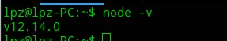
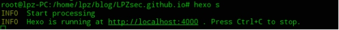
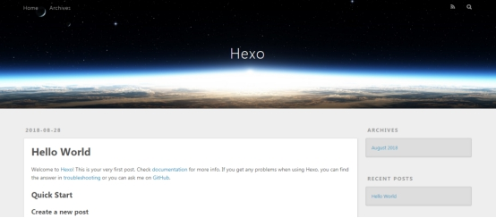
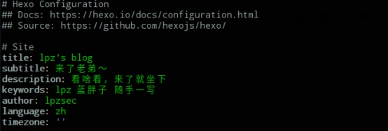
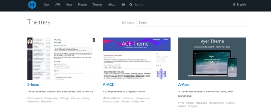
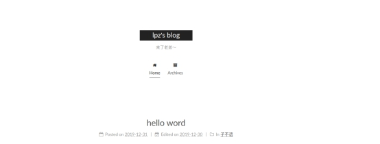

开始搭建
安装 node
因为 hexo 是基于 node 框架的，所以呢，我们首先需要下载安装node，下载地址：nodejs
安装完之后，我们打开命令窗口，输入 node -v ，如果返回下图所示，那么就说明你安装 node 成功了。

初始化blog
安装成功后，我们在命令行窗口运行如下命令来安装hexo：npm install hexo-cli -g
初始化博客目录：hexo init wistbean.github.io (这里的wistbean换成你自己的英文名)
初始化完成后，我们就进入我们的目录：cd wistbean.github.io
安装npm install
clean一下：hexo clean
然后生成静态页面： hexo g
g 就是generate ,生成的意思
接着把你的网站运行起来hexo s
s 就是server ,在服务器运行的意思

打开你的浏览器，输入 localhost:4000 。 自此，你的个人网站就这么速度的搭建起来了！

优化 hexo 博客主题
修改你的网站中的个人信息
进入你的网站目录，打开 _config 文件，这个文件是用来配置你的网站信息的。
这里列出我的简单配置，具体可以看这个Hexo配置文档

选一个Hexo主题
刚搭建完的网站，是不是觉得有点丑，不符合你的漂亮的脸庞？ 反正我是这么觉得的，那么就选一个主题来装饰一下吧，在这里可以选择你要的主题：知乎答主们推荐的hexo主题大全的和官网主题。

下载Hexo主题
选择好了你的主题之后，就可以下载主题资源了，比如我这里选择一个 NEXT 主题来演示一下,在你的目录中输入以下命令：
1 | git clone https://github.com/iissnan/hexo-theme-next themes/next |
这里主要就是将主题下载到我们的themes目录下。
配置主题
主题下载完之后，在你根目录下的 _config.yml 文件中，修改 theme 为你的主题名字：
1 | theme: next |
重新生成和运行
1 | hexo g |
访问一下看看，是不是比之前好看多了？

hexo博客的第一篇文章，打上标签和分类
你已经把你的网站打扮的漂亮大方简洁惹人爱了，那么接下来就要好好去写内容了，内容才是重要的。
两种方式来新建你的博文
命令形式
在你的 blog 目录下使用如下命令：
hexo new article （这里的article写上你的文章的名称）
输入这样的命令之后你的 source/_posts 下就会生成一个 article.md 文件，在这个文件下就可以写上你的博客内容了。用 Markdown 的语法去写。
直接新建方式
直接点的方式就是直接在source/_posts新建一个 Markdown 文件，其实和命令形式是一个道理，只不过命令形式用了命令来创建。推荐使用命令的方式，毕竟 Geek 一点。
给你的文章打上标签
在你的博客中打标签能让你的文章方便检索。
hexo打开标签功能：
1 | hexo new page tags |
这时候你的 source/ 下生成 tags/index.md 文件，我们将其打开，然后把它改成：
1 | type: "tags" |
这时候你要为你的文章打上标签就可以在文章的头部写上：
1 | tags: |
给你的文章添加分类
分类，归档，是你博客的特性之一。把文章分门别类，方便查看。
打开hexo分类功能：
1 | hexo new page categories |
同样的，你的 source 目录下生成 categories/index.md 文件，我们将其打开，把它改成：
1 | type: "categories" |
这时候你就可以给你的文章归类存档了，使用方式就是在你的文章的头部加上：
1 | categories: |
注意：标签和分类要确定你的配置文件 _config.yml 是否有打开了 tag_dir: tags 和 category_dir: categories。另外，Markdown 的语法是写作最优雅最简洁最简单的，如果之前没用过的建议去学一下Markdown 语法说明，一般一个钟左右就能掌握。因为它和 HTML 那样简单。